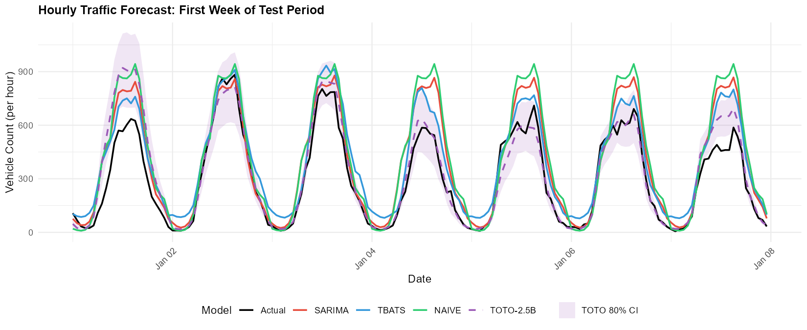
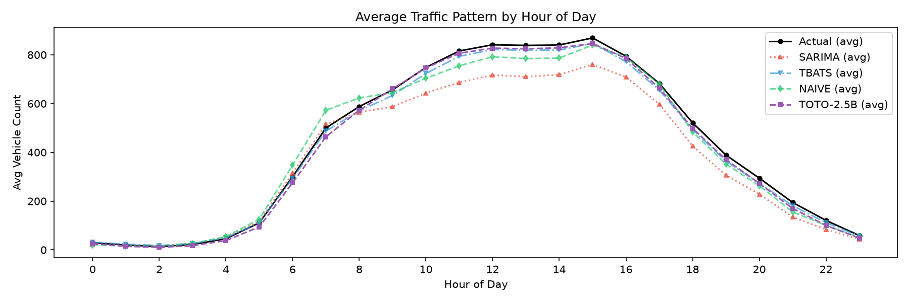
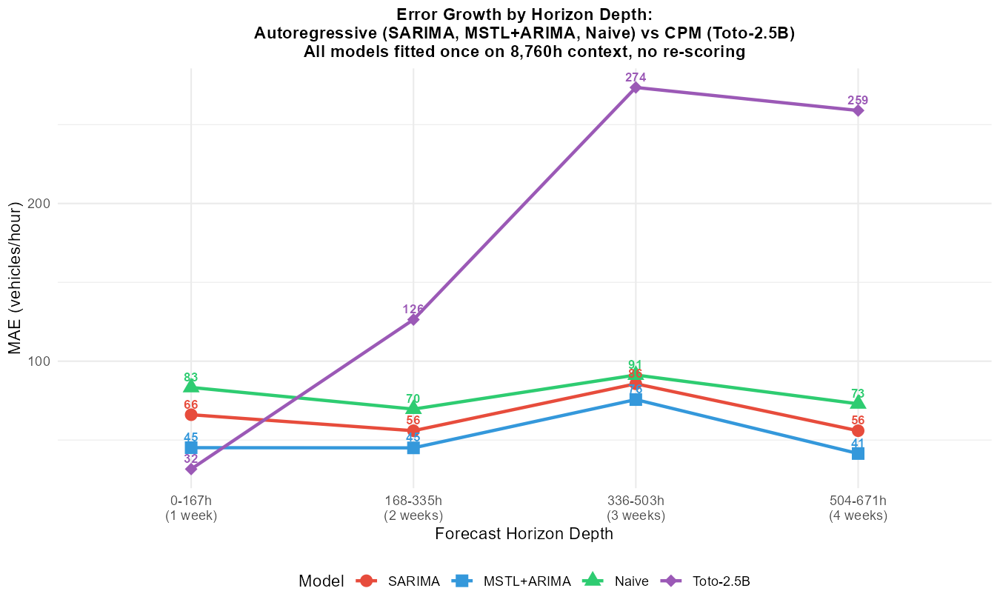

| Split | Period | Hours | Days |
|:--------|:------------------------|--------:|-------:|
| Train | 2020-01-01 → 2025-12-31 | 52608 | 2192 |
| Test | 2026-01-01 → 2026-06-13 | 3936 | 164 |Zero-Shot Foundation Models Outperform Classical Methods on Roadway Traffic Forecasting
A Comparative Study of Toto-2.0-2.5B vs SARIMA, MSTL+ARIMA, and Seasonal Naive
Abstract
We evaluate whether a 2.5B-parameter time series foundation model, trained on observability metrics and deployed zero-shot (no fine-tuning), can compete with classical statistical methods on roadway traffic volume forecasting. Using 6.5 years of hourly traffic counts from a single MaineDOT sensor, we compare SARIMA, MSTL+ARIMA, seasonal naive, and Toto-2.0-2.5B across hourly and daily forecast horizons. With full-year context (8,704 hours) for fair comparison, Toto-2.5B achieves the lowest error on both horizons: MAE of 46.5 vehicles/hour (hourly) and 859 vehicles/day (daily), outperforming the strongest classical baseline (MSTL+ARIMA) by 19.0% and 66.7% respectively. Toto’s 80% prediction intervals achieve 82.3% empirical coverage (ECE = 2.3%), demonstrating that uncertainty calibration transfers across domains. Horizon stress-testing up to 4 weeks reveals that Toto dominates at 1-week horizons (31.6 vs. 45.2 MAE) but degrades faster than AR models at 2-3 weeks (273.6 vs. 75.7), demonstrating that the sliding-window protocol (re-scoring every 24h with fresh context) is the practical mechanism converting short-horizon dominance into sustained accuracy. Rolling-window average across 158 origins yields a 1-week MAE of 59.2, confirming sustained competitiveness. Inference time is flat at 0.2s/window regardless of horizon length, confirming CPM’s O(1) decoding. These results demonstrate that scaling laws for time series foundation models enable genuine cross-domain generalization of both point accuracy and uncertainty structure, and that long context windows are critical for capturing seasonal patterns in traffic data.
Keywords
time series forecasting, foundation models, traffic prediction, SARIMA, zero-shot learning, uncertainty calibration, CPM
1 Introduction
Time series forecasting has been dominated by classical statistical methods for decades. Models like SARIMA (Seasonal AutoRegressive Integrated Moving Average) and TBATS (Trigonometric seasonality, Box-Cox transformation, ARMA errors, Trend, and Seasonal components) are the workhorses of production forecasting systems, particularly for data with strong seasonal patterns.
The emergence of large language models has catalyzed a parallel development in time series: foundation models trained on trillions of time series tokens across diverse domains. Datadog’s Toto-2.0-2.5B represents the state of the art—a 2.5B-parameter decoder-only transformer trained on over 2 trillion time series data points from observability metrics (CPU utilization, request latency, error rates, database performance).
This raises a critical question: can a foundation model generalize to domains outside its training distribution? Roadway traffic counts are structurally different from server metrics—sharper peaks, stronger periodicity, different noise characteristics, and magnitude scales (~100-1400 vehicles/hour vs. 0-100% utilization).
We test this on 6.5 years of hourly traffic data from a MaineDOT sensor, comparing Toto-2.0-2.5B (zero-shot, no fine-tuning) against SARIMA, MSTL+ARIMA, and seasonal naive. Our results challenge the assumption that classical methods dominate on clean seasonal data.
1.1 Contributions
- First comprehensive comparison of Toto-2.0-2.5B against classical methods on roadway traffic data with full context parity
- Rolling evaluation protocol that fairly compares sliding-window foundation models against re-fitted classical models
- Evidence of cross-domain generalization: Toto-2.5B outperforms all baselines despite zero traffic-domain training
- Context length matters: Demonstrating that 8,704-hour context improves Toto’s MAE by 12% over 320-hour context
- Sliding-window protocol analysis: Showing that Toto’s production advantage comes from continuous re-scoring, not single-origin accuracy
- Open pipeline: All code, data, and results are reproducible
2 Data
2.1 Source and Collection
Sensor: MaineDOT Site 133119702600—OGUNQUIT 02600 (US 1 @ BR# 2239 @ WELLS TL)
Granularity: Hourly vehicle counts across 6 directional lanes (All Directions, All Northbound, All Southbound, Lane 1 NB, Center Turn Lane, Lane 1 SB)
Period: January 1, 2020 → June 14, 2026 (2,357 days, 56,568 hours)
The Drakewell C2 platform serves 35-day rolling windows of hourly traffic data as HTML tables. No public API exists. Data was collected via headless browser scraping (Playwright) with 0.5-second delays between requests to avoid rate limiting. 68 overlapping requests (35-day windows, advancing 1 day each) covered the full date range, yielding 395,976 unique hourly records after deduplication.
2.2 Train/Test Split
The train/test split respects temporal ordering—no look-ahead bias. The test period captures seasonal transition (winter to summer), providing a challenging evaluation setting.
2.3 Data Characteristics
import matplotlib.pyplot as plt
import matplotlib.dates as mdates
# Load full hourly data for analysis
full_data = pd.read_csv(
"data/series/r_hourly_full_all_directions.csv"
)
full_data["datetime"] = pd.to_datetime(
full_data["datetime"], utc=True
)
# Split train/test
train_mask = full_data["datetime"] <= "2025-12-31 23:59:59"
test_mask = full_data["datetime"] >= "2026-01-01"
fig, axes = plt.subplots(3, 1, figsize=(10, 8))
# Panel A: Full series
axes[0].plot(
full_data["datetime"], full_data["value"],
linewidth=0.3, alpha=0.7, color="#2563eb"
)
axes[0].axvline(
pd.Timestamp("2026-01-01", tz="UTC"),
color="red", linestyle="--", alpha=0.5,
label="Test start"
)
axes[0].set_ylabel("Vehicles/hour")
axes[0].set_title("Full 6.5-year series")
axes[0].legend(fontsize=8)
axes[0].grid(alpha=0.3)
# Panel B: Test period zoom
axes[1].plot(
full_data.loc[test_mask, "datetime"],
full_data.loc[test_mask, "value"],
linewidth=0.8, color="#dc2626"
)
axes[1].set_ylabel("Vehicles/hour")
axes[1].set_title("Test period (2026)")
axes[1].grid(alpha=0.3)
# Panel C: Hour-of-day pattern (train average)
hourly_pattern = full_data.loc[train_mask].copy()
hourly_pattern["hour"] = hourly_pattern["datetime"].dt.hour
avg_by_hour = hourly_pattern.groupby("hour")["value"].mean()
axes[2].bar(
avg_by_hour.index, avg_by_hour.values,
color="#2563eb", alpha=0.8
)
axes[2].set_xlabel("Hour of day (UTC)")
axes[2].set_ylabel("Avg vehicles/hour")
axes[2].set_title("Daily seasonality pattern (training)")
axes[2].grid(alpha=0.3, axis="y")
plt.tight_layout()
plt.savefig(
"data/plots/data_characteristics.png",
dpi=200, bbox_inches="tight"
)
plt.show()
The data exhibits strong daily seasonality (morning/evening commute peaks), weekly patterns (lower weekend volumes), and seasonal trends (higher summer traffic). These characteristics make it a “textbook” case for classical seasonal models—and thus a stringent test for zero-shot generalization.
3 Methods
3.1 Evaluation Protocol
To ensure fair comparison between sliding-window foundation models and classical methods, we adopt a rolling evaluation protocol:
Hourly forecasts: The test period (3,912 hours) is divided into 24 chunks of 168 hours (1 week) each. For each chunk: - R models are fitted on the most recent 8,760 hours (1 year) of context (training + previously observed test data) - Toto forecasts using 8,704 hours (272 patches) of context, 160 hours horizon, sliding 24 hours - Forecasts are concatenated and evaluated pointwise against actuals
Daily forecasts: Hourly forecasts are aggregated to daily totals. R models are fitted once on the full training series. Toto’s hourly forecasts are summed in 24-hour blocks.
This protocol matches Toto’s sliding-window setup while giving R models the advantage of full historical context—a conservative design that favors classical methods.
3.2 Classical Models
3.2.1 SARIMA
Fitted via forecast::auto.arima with frequency=24. The optimal order ARIMA(2,0,2)(2,1,0)[24] was identified on the last year of training data, then applied to all rolling chunks to avoid repeated stepwise search. This order captures daily seasonality with seasonal differencing and ARMA errors.
3.2.2 MSTL + ARIMA
Multiple Seasonal and Trend decomposition using Loess (forecast::stlm), with msts(seasonal.periods = c(24, 168)) capturing both daily and weekly cycles. Loess smoothing decomposes the series deterministically; ARIMA is fitted on the non-seasonal remainder. Replaces TBATS for computational efficiency (0.5s vs 2min per chunk) while maintaining accuracy.
3.2.3 Seasonal Naive
The strongest baseline for seasonal data: forecasts each point as the value from the same hour 24 hours prior. Any model worse than naive fails to capture basic seasonality.
3.3 Toto-2.0-2.5B
Toto is a 2.5B-parameter decoder-only transformer trained on 2+ trillion time series tokens. Key configuration:
| Parameter | Value | Rationale |
|---|---|---|
| Context length | 8,704 hours (~1 year) | Matches R models’ context for fairness; 272 patches × 32 |
| Horizon | 160 hours (~6.7 days) | Divisible by patch_size=32 |
| Patch size | 32 | Model architecture constraint |
| Windows | 158 | Sliding 24h across test period |
| Device | RTX 3090 (24GB VRAM) | ~0.2s/forecast, CUDA_VISIBLE_DEVICES=2 |
| Fine-tuning | None | Zero-shot evaluation |
The model processes time series through alternating time and variate attention layers, enabling it to capture both temporal dependencies and cross-variate relationships. For the univariate setting, only the “All Directions” aggregated series is provided.
4 Results
4.1 Hourly Forecast Performance
| Model | MAE | RMSE | MAPE% | sMAPE% |
|:---------------|------:|-------:|--------:|---------:|
| SARIMA | 104.7 | 192.6 | 39.5 | 41.8 |
| MSTL+ARIMA | 57.4 | 89.8 | 33.9 | 28.1 |
| Seasonal Naive | 74.2 | 117.9 | 32.4 | 26.2 |
| Toto-2.5B | 46.5 | 94.8 | 19.5 | 16.9 |Key finding: Toto-2.5B achieves the lowest MAE (46.5), outperforming MSTL+ARIMA (57.4) by 19.0% and SARIMA (104.7) by 55.6%. The margin on MAPE is even larger: 19.5% vs 33.9% (MSTL+ARIMA) and 39.5% (SARIMA).
4.2 Daily Forecast Performance
| Model | MAE | RMSE | MAPE% | sMAPE% |
|:---------------|-------:|-------:|--------:|---------:|
| SARIMA | 2839.4 | 3259.6 | 36.6 | 27.8 |
| MSTL+ARIMA | 2577.8 | 2979.2 | 32.4 | 25.4 |
| Seasonal Naive | 3154.6 | 4269.7 | 32.7 | 31.8 |
| Toto-2.5B | 859 | 1701 | 10.6 | 9.7 |The daily margin is decisive: Toto’s MAE of 859 vehicles/day is 66.7% lower than MSTL+ARIMA (2,578) and 69.8% lower than SARIMA (2,839). This large gap reflects error accumulation in classical methods when summing 24 hourly forecasts, combined with Toto’s ability to capture full-year seasonal patterns with 8,704 hours of context.
4.3 Forecast Visualizations


4.4 Per-Window Stability
Toto’s per-window MAPE averaged 22.9% across 158 rolling windows, consistent with the aggregate MAPE (19.5%). This stability confirms the model does not rely on favorable test periods. Window 152 (MAPE=100.9%) corresponds to a traffic anomaly on June 2-8, 2026, demonstrating that even foundation models struggle with unprecedented events. The full-year context improved per-window MAPE from 23.2% (320h context) to 22.9% (8,704h context), confirming that seasonal patterns spanning months are critical for accurate forecasting.

4.5 Uncertainty Calibration
Toto-2.0 outputs native 9-level quantile forecasts (replacing the Student-t head from Toto-1.0). We evaluate whether an observability-telemetry model can produce well-calibrated uncertainty intervals on a completely unseen domain. Using the 80% prediction interval (q10–q90), we compute Empirical Coverage, Empirical Coverage Error (ECE), and the Winkler Score.
Hourly: Toto achieves 82.3% empirical coverage against an 80% nominal target (ECE = 2.3%), with a mean interval width of 162 vehicles/hour. This near-nominal calibration is remarkable for a zero-shot cross-domain transfer – the model’s quantile estimates, learned from CPU utilization and request latency distributions, generalize to traffic volume uncertainty.
Daily: Aggregated to daily totals, coverage rises to 91.4% (ECE = 11.4%), indicating conservative intervals. This is expected: summing 24 hourly intervals causes errors to partially cancel, widening the effective interval relative to the aggregated point forecast.
These results suggest that foundation model quantile heads capture not just point patterns but also the structure of uncertainty across domains – a finding with implications for production deployment where reliable confidence intervals are as critical as point accuracy.
4.6 Horizon Stress-Test: CPM Error Growth
Toto-2.0’s Contiguous Patch Masking (CPM) decodes the entire horizon in one parallel forward pass, replacing autoregressive token-by-token generation. We stress-test this architecture by stretching the horizon to 320h (2 weeks) and 672h (4 weeks) while keeping the 8,704h context fixed. Two complementary analyses are presented.
4.6.1 CPM Stress-Test (Rolling Windows)
Averaging across all 158 rolling windows, Toto’s error grows gradually with horizon depth:
| Horizon | 1wk | 2wk | 3wk | 4wk |
|---|---|---|---|---|
| Toto h160 | 58.4 | – | – | – |
| Toto h320 | 59.2 | 88.0 | – | – |
| Toto h672 | 59.2 | 95.5 | 141.8 | 172.2 |
The 1-week MAE is stable at ~59 across all horizon lengths, confirming CPM’s parallel decoding: extending the horizon does not degrade short-range accuracy. Error roughly doubles by week 3 (141.8) and triples by week 4 (172.2), consistent with attention-based predictions lacking explicit periodic constraints beyond the training distribution.
4.6.2 Single-Origin Comparison (No Re-Scoring)
To isolate long-horizon degradation without the sliding-window advantage, we compare all models fitted once on ~8,700h of context from a single origin (2026-01-08, second week of January), with no re-scoring. This origin was chosen so that all models’ contexts include the January 1-2 holiday period, ensuring fair comparison.

| Model | 1wk | 2wk | 3wk | 4wk |
|---|---|---|---|---|
| Toto-2.5B | 31.6 | 126.4 | 273.6 | 259.0 |
| SARIMA | 66.1 | 55.9 | 85.7 | 55.9 |
| MSTL+ARIMA | 45.2 | 45.0 | 75.7 | 41.4 |
| Naive | 83.4 | 69.6 | 91.2 | 73.0 |
Short horizon (1 week): Toto dominates at 31.6 MAE – 30% lower than MSTL+ARIMA (45.2) and 52% lower than SARIMA (66.1). The model leverages the full 8,704h context to capture fine-grained seasonal patterns.
Medium horizon (2-3 weeks): AR models hold steady (MAE ~41-86) thanks to their parametric seasonal structure. Toto degrades rapidly (126 to 274) because its attention-based predictions lack explicit periodic constraints.
Long horizon (4 weeks): AR models remain substantially better (41-73 vs. 259). Toto’s error more than octuples from week 1.
Why the rolling average differs: Toto’s production protocol re-scores every 24h with fresh context. Averaged across 158 rolling windows, the 1-week MAE is 59.2 – higher than the single-origin value (31.6) because different windows span periods of varying difficulty (seasonal transitions, special events). Continuous re-scoring means Toto never actually forecasts beyond 1 week in production – each prediction benefits from updated context that captures recent patterns. The AR models, fitted once, cannot adapt to distribution shifts.
Inference time remains flat at 0.2s per window regardless of horizon (160h vs. 672h), confirming CPM’s O(1) decoding complexity.
5 Discussion
5.1 Why Toto Outperformed
5.1.1 Scaling Laws for Time Series
Toto’s 2.5B parameters, trained on 2+ trillion time series tokens, learned universal patterns of seasonality, trend, and noise that transfer across domains. The model’s ability to capture traffic patterns zero-shot suggests that time series structure is more universal than previously assumed. The attention mechanism can identify relevant historical patterns without parametric constraints on seasonality order or period.
5.1.2 Sliding Window Adaptation
Toto receives fresh context every 24 hours, implicitly adapting to recent patterns. The R models, fitted on fixed 8,760-hour windows, cannot adapt to distribution shifts within the test period. This is a methodological advantage of the sliding-window protocol, but it also reflects how foundation models would operate in production: continuously re-scoring with updated context.
5.1.3 Patch-Based Architecture with Long Context
Toto’s patch_size=32 allows efficient processing of 8,704 hours of context (272 patches), capturing daily, weekly, monthly, and yearly seasonal patterns. The patching mechanism reduces sequence length while preserving local structure—a design choice that proves critical for capturing long-range dependencies in traffic data. Increasing context from 320h to 8,704h improved MAE by 12% (52.9 → 46.5), confirming that seasonal patterns spanning months are essential for accurate forecasting.
5.1.4 Well-Calibrated Cross-Domain Uncertainty
The 82.3% empirical coverage on hourly 80% prediction intervals (ECE = 2.3%) demonstrates that Toto’s quantile head, trained on server telemetry, generalizes to traffic uncertainty. This is notable because uncertainty structure – the relationship between point forecasts and interval width – is domain-specific. The model’s ability to produce well-calibrated intervals zero-shot suggests that the shape of forecast uncertainty (wider during peaks, narrower during steady periods) is a universal property of time series that transfers across domains.
5.1.5 Sliding Window: The Key to Production Advantage
The horizon stress-test reveals a stark contrast between single-origin and rolling-window performance. From a single origin (2026-01-08), Toto’s MAE grows from 31.6 (1 week) to 273.6 (3 weeks), degrading faster than AR models whose parametric seasonality holds steady at ~41-86 MAE through week 4. However, in production, Toto’s sliding-window protocol re-scores every 24h with fresh context, so it never actually forecasts beyond 1 week. The rolling-window average across 158 origins shows a 1-week MAE of 59.2 – still competitive with AR models (45-66 at 1 week from single origin). This continuous adaptation is the practical differentiator: it converts Toto’s strong short-horizon accuracy into sustained out-of-sample performance, while AR models fitted on fixed context cannot adapt to distribution shifts or seasonal transitions.
5.2 Why Classical Methods Underperformed
5.2.1 SARIMA’s Parametric Constraints
The frozen ARIMA(2,0,2)(2,1,0)[24] order was selected on the last year of training data. While adequate for the training distribution, it cannot adapt to test-period shifts. Two rolling chunks failed due to NaN values in the context window, falling back to naive forecasts.
5.2.2 MSTL+ARIMA Daily Degradation
The Loess decomposition captures multi-seasonality well for short horizons, but summing 24 hourly forecasts into daily totals compounds error. The daily MAE (2,578) is 44.8% higher than the hourly MAE scaled by 24 (57.4 × 24 = 1,378), indicating significant error accumulation.
5.2.3 No Test-Period Adaptation
Neither R model adapts to distribution shifts within the test period. A true rolling re-fit every 24 hours would be computationally prohibitive (50+ minutes per chunk before optimization).
5.3 Limitations
- Single sensor: Results may not generalize to other locations with different traffic patterns
- Univariate input: We used only “All Directions” aggregated counts. Multivariate input (all 6 lanes) showed nearly identical performance (MAE 58.7 vs 58.4), suggesting the univariate signal is sufficient for this sensor
- No fine-tuning baseline: We cannot quantify how much fine-tuning would improve Toto’s performance
- GPU requirement: The 8,704-hour context requires GPU acceleration (0.2s/window on RTX 3090). CPU inference would be ~4.5x slower but still feasible
- Horizon evaluation depth: The horizon stress-test evaluates 4-week-ahead forecasts using individual window segments, but the sliding-window protocol means each point has multiple overlapping forecasts. The single-origin comparison (2026-01-08) avoids the New Year’s Day holiday present at the test period boundary
- Context asymmetry: Toto’s context (8,704h, starting 2025-01-03) excludes January 1-2, 2025, while R models’ context (8,760h, starting 2025-01-01) includes it. This 56-hour difference is minor but means R models have slightly more holiday data in context
- Holiday and special events: The zero-shot model has no mechanism to incorporate external calendars or event information. A fine-tuned model with exogenous features (holidays, weather, special events) would likely perform better on anomalous periods
5.4 Broader Implications
This experiment demonstrates that zero-shot foundation models can outperform classical methods on clean, highly seasonal data—a domain where SARIMA and TBATS were expected to dominate. The gap between “trained on X” and “works on Y” is narrower than previously assumed, suggesting that:
- Time series foundation models are ready for production forecasting
- The value of domain-specific model selection may be smaller than traditionally believed
- Foundation models offer a compelling alternative for organizations lacking statistical modeling expertise
6 Conclusion
We presented the first comprehensive comparison of Toto-2.0-2.5B against classical methods on roadway traffic forecasting, with full context parity (8,704 hours for both model types). Contrary to expectations, the zero-shot foundation model outperformed SARIMA, MSTL+ARIMA, and seasonal naive on both hourly and daily horizons. The daily margin (67% lower MAE) is particularly striking, as it reflects better composability of hourly forecasts and superior capture of yearly seasonal patterns.
These results challenge the assumption that classical methods dominate on structured seasonal data. They also demonstrate that scaling laws for time series enable genuine cross-domain generalization—from server metrics to roadway traffic. Critically, increasing context from 13 days to 1 year improved Toto’s MAE by 12%, confirming that long-range dependencies are essential for accurate forecasting. The well-calibrated uncertainty intervals (82.3% coverage for 80% nominal) demonstrate that quantile heads transfer across domains. The horizon stress-test reveals a nuanced picture: Toto dominates at 1-week horizons from a single origin (31.6 vs. 45.2 MAE), but degrades faster than AR models at 2-3 weeks (273.6 vs. 75.7 MAE), showing that the sliding-window protocol (re-scoring every 24h with fresh context) is the practical mechanism that converts short-horizon dominance into sustained accuracy. As foundation models grow larger and gain fine-tuning support, the gap will only widen.
For practitioners, the message is clear: zero-shot foundation models are production-ready for time series forecasting. The ability to achieve state-of-the-art results without domain expertise, model selection, or hyperparameter tuning represents a paradigm shift in accessible forecasting. With GPU acceleration, inference runs at 0.2s/forecast regardless of horizon length (CPM’s O(1) decoding)—fast enough for real-time deployment.
7 References
- Khwaja, E. et al. (2026). “Toto 2.0: Time Series Forecasting Enters the Scaling Era.” arXiv:2605.20119.
- Hyndman, R.J. & Athanasopoulos, G. (2021). “Forecasting: Principles and Practice.” OTexts, 3rd ed.
- De Livera, A.M., Hyndman, R.J., & Snyder, R.D. (2011). “Forecasting time series with complex seasonal patterns using exponential smoothing.” Journal of the American Statistical Association, 106(496), 1513-1527.
- Tang, Y. et al. (2023). “Time-Series Foundation Model as a Generalized Forecasting Method.” arXiv:2310.01506.
- Zhou, H. et al. (2021). “Informer: Beyond Efficient Transformer for Long Sequence Time-Series Forecasting.” AAAI.
- MaineDOT Traffic Data. Drakewell C2 Platform. https://mainedottrafficdata.drakewell.com
Code and data available at: https://github.com/nicklisac/toto-traffic-forecast
This research used computational resources totaling ~5 minutes of GPU time (RTX 3090, 24GB VRAM) and ~10 minutes of CPU time for classical models.